RUMKOORDINATER
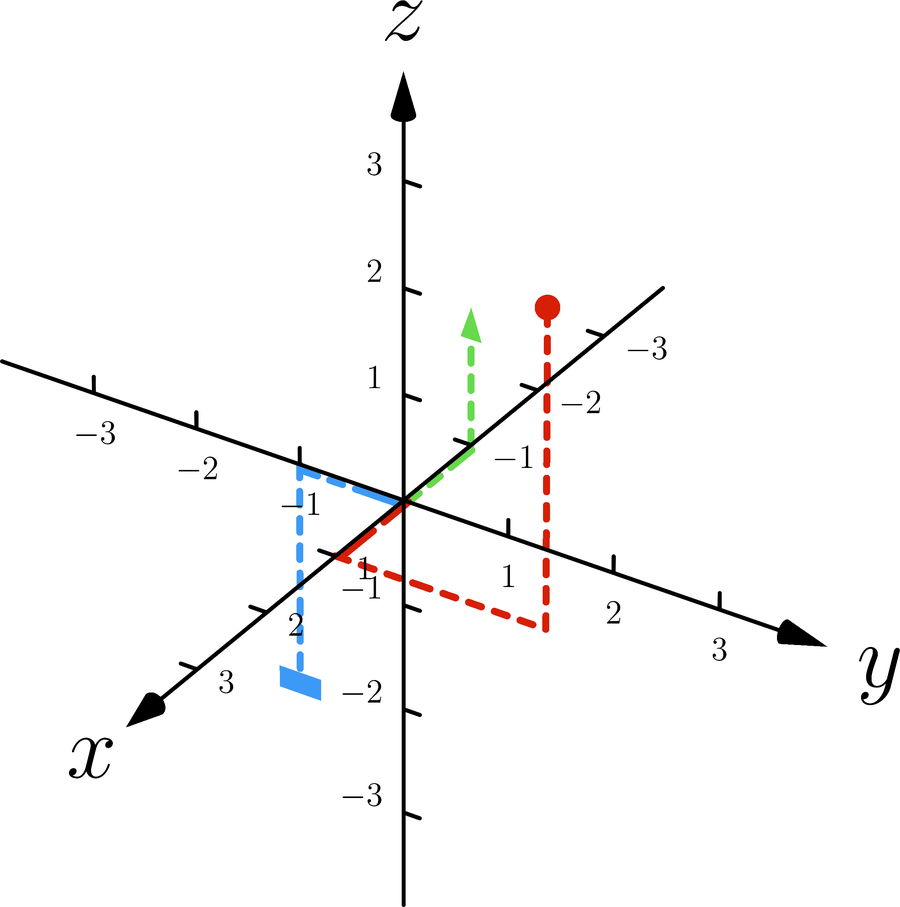
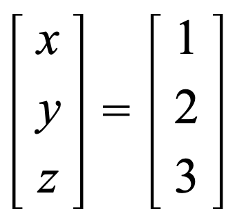
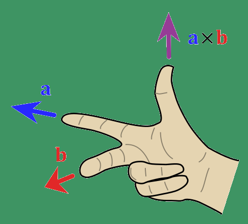
Krydsprodukt 3d
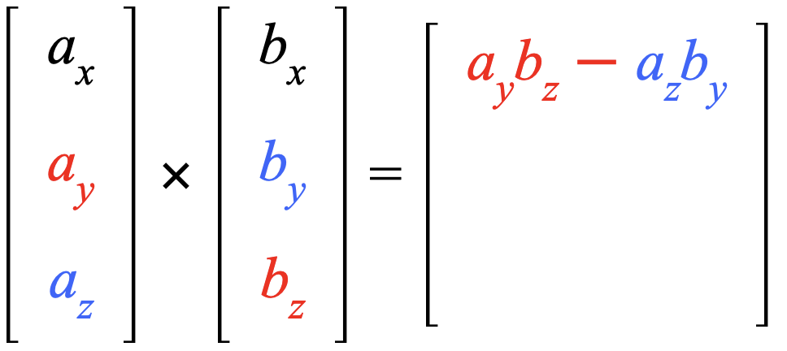
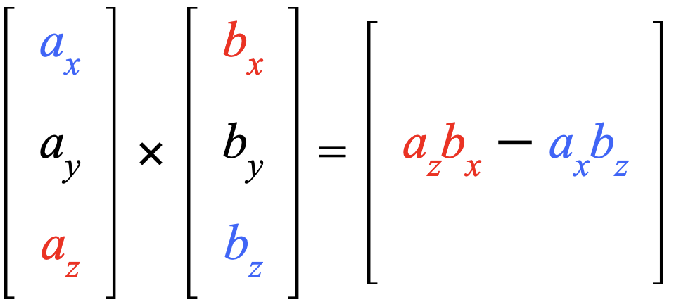
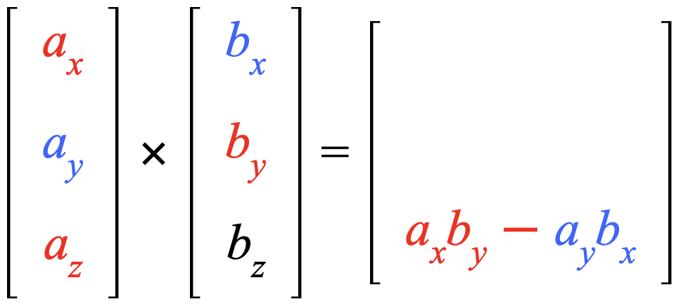
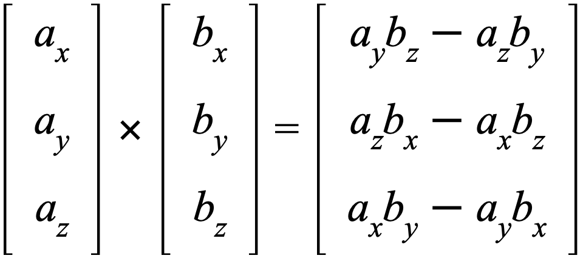
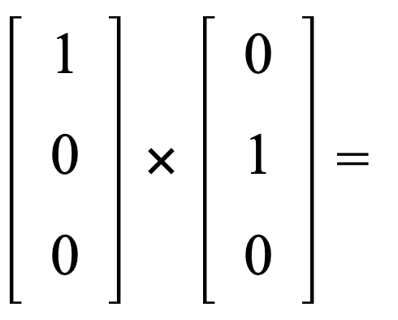
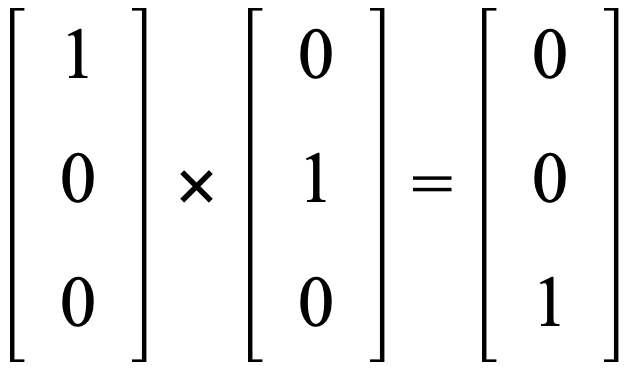
NU TIL NOGET FYSIK
Tågekammer med mættet alkohol. Som ved skydannelse kræver det partikler for at der opstår "skyer". Disse partikler kommer af kosmisk stråling!

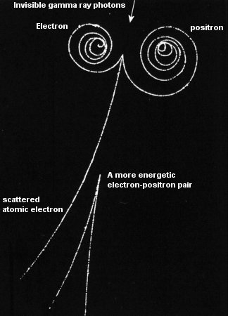

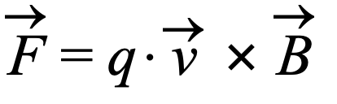
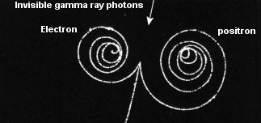
- Brug højrehåndsreglen til at forklare hvorfor positronen laver en spiral til venstre.
- Brug Lorentz formlen til at forklare hvorfor elektronen laver en spiral til højre.
- Brug tab at kinetisk energi til at forklare hvorfor partiklerne laver spiraler som bliver mindre og mindre.
Massespektrometer
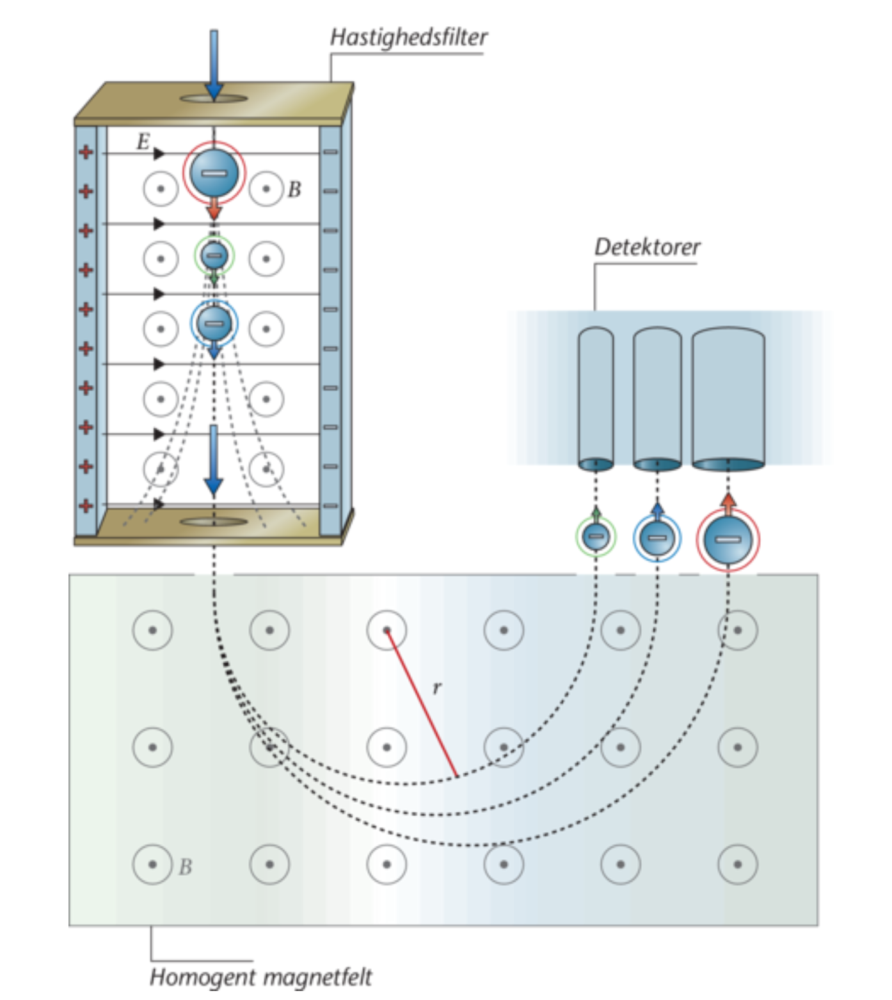
Massespektrometer
I accelerator-masse-spektroskopi (AMS) anvendes et massespektrometer til at bestemme ganske små mængder $ {}_{ 6}^{14} C$ , hvilket muliggør en meget præcis kulstof 14-datering eller muliggør kulstof 14-datering af meget små prøver. Radius i cirkelbevægelsen er givet ved $$ r = \frac{m·v}{|q|\cdot B} $$- ${}_{6}^{12} C $
- ${}_{ 6}^{13} C $
- ${}_{ 6}^{14} C $